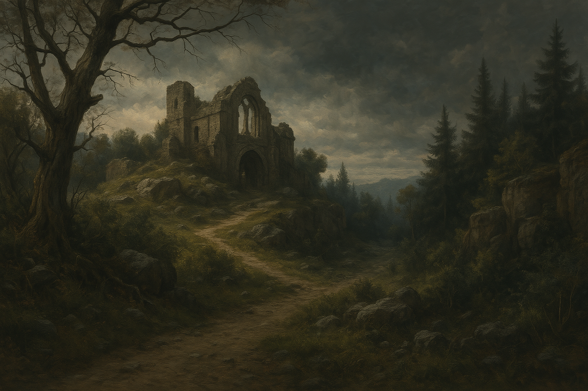

Chapter 2: Basement of the Shrine
Dark Petals

Dark Petals
15048.11.17
晚餐時間後，Brown 與 Mr. Muffins 終於穿越森林，來到了魏斯科。進到城內，Brown 找到了一間名為「Beer, Food, Fun!」的酒館，便進來用餐。在餐點上來前，Brown 聽見了酒館某處有人正在討論著關於拉索斯的事。出於好奇，Brown 便前去，詢問他們是否願意告訴他更多關於拉索斯的事。兩名女人當中較為年輕，面貌姣好的自稱為 Maylee，另一位年長女子則為 Matilda，似乎不太說話。Maylee 表示如果他願意請他們各一杯啤酒的話，他們願意告訴他一些事。
把酒言歡，Brown 藉機詢問了一些關於拉索斯的問題，得知這邊的拉索斯教堂叫服從神社，由卡魯神父主持。另外，他也打聽到了前陣子附近一座叫沃瓦倫的村莊，似乎被毀滅了。兩名女人也看見了 Mr. Muffins，Maylee 非常喜歡他，甚至讓他坐在她的大腿上。因為聊得很開心，Maylee 起身，給 Brown 點了一杯特別的酒，並從吧台拿了過來。Brown 不疑有他，便喝了下去。不久後，他開始感到暈眩，暈眩，暈眩。Brown 試圖站起身，去找酒保，要了杯水來喝。回頭坐了下來，Brown 試著把 Mr. Muffins 帶走，準備找地方休息，Maylee 卻將手按在 Mr. Muffins 身上，不讓 Brown 帶走。太過疲憊的 Brown 於是決定直接趴在餐桌上昏去。
睜開雙眼，Brown 感覺到自己的身體正在搖晃中。一看，他正被兩個高壯的男人前後扛著。發現 Brown 清醒後，他身後的男人示意了一下，兩人停了下來。前面的男人朝著 Brown，比了個噓的動作，然後兩人便繼續扛著他前進。Brown 不知道自己在哪裡，而 Mr. Muffins 與兩名女子都已不見蹤影。
Brown 發現自己被丟在一個密閉的空間，光線昏暗，且雙手雙腳都被綁住。兩名男人將他的背包丟在他的臉上後便離開。Brown 努力掙脫，站了起來，才發現自己的身邊被一圈又一圈的椅子圍繞。而坐在那些椅子上的，都是屍體，乾枯的只剩下白骨。Brown 趕緊隨著剛剛瞥見男人們離開的方向跑去，爬上了一到階梯。
從階梯探出頭，Brown 發現這裡竟然是在教堂內。深夜的教堂，只有神父和一名來告解的男人。Brown 小心翼翼地蹲低身體，悄悄繞出了教堂外。他在幾乎無人的街區，利用開鎖技術，闖進了一間服飾店，簡單換裝後便走了出來，回頭往教堂去。
Brown 走入這座教堂—服從神社內，和正在接受告解的神父打了聲招呼，詢問等等是否方便和神父談談話？等待的時間不長，另外那名男人便走了。神父自我介紹為 Karu 神父，並和 Brown 說明這裡一樓是教堂，二樓是給孤兒們居住的空間。Brown 好奇問起教堂是否有地下室？Karu 神父則簡單帶過，表示底下是儲藏間。眼看夜已深，Karu 神父邀約 Brown 在二樓入住，但對 Karu 神父不太相信的 Brown 表示明天再來拜訪，於是便離開了服從神社。
市區的旅店還開著，Brown 走入了庇護地旅社。兩名櫃檯人員和他說明一晚住宿的費用後，便遞了鑰匙給他。好奇心下，Brown 問了櫃檯人員是否見過那朵黑色的花？端詳著 Brown 拿出的花朵，櫃檯女人員 Garlia 表示自己沒見過，男人員 Eddie 則表示自己好像看過。Brown 想追問，但 Eddie 要他提供點錢才願意幫他。Brown 掏出了一枚銀幣，Eddie 想了想，說也許他該去找 Wescoe 的服務中心，他們能給更多資訊。對於自己給了錢，卻幾乎什麼資訊都沒得到，Brown 十分不滿，試圖威嚇 Eddie，Eddie 於是將剛剛拿到的銀幣還給 Brown。然而，在 Brown 將銀幣拿到手前的那一刻，Eddie 的另一隻手便伸向 Brown 的錢包，想整包捧去。Brown 大聲喝斥，最終，Eddie 才乖乖把錢還給他，然後轉頭走向櫃檯後的辦公室。
Garlia 對於剛剛 Eddie 的行為，向 Brown 致歉，表示這裡夜班的人員通常都是沒經驗的年輕人，或是較底層的人，希望 Brown 不會放在心上。Brown 看見了櫃檯後的一幅畫像，向 Garlia 詢問，得知庇護地的老闆是這名被稱為諾曼爵士的男子。
15048.11.18
213 號房內，Brown 一早就醒來了。背著全身家當，Brown 到了 Beer, Food, Fun! 用早餐。他聽見了店內除了他以外唯二的男子正在討論著 Karu 神父，便湊過去請教。兩名男子表示自己是 Tommy 和 Roger，兩人是兄弟，共同經營一間當鋪。兩人提到 Karu 神父剛來到 Wescoe 不久，但城市需要什麼事，他都樂意幫忙。在看過 Brown 拿出的花以後，Tommy 表示自己曾經在旁邊的恬靜花園看過，但是只看過一次。
聽見有用的資訊，Brown 快速用完餐，便往恬靜花園走去。雖然時間還早，花園內早已塞滿遊客。Brown 繞了一整圈，沒能找到類似的花。他想找花園的負責人，卻也沒能找到類似的人影。同時，花園內爆滿的人潮，讓他也找不到座椅休息。
Brown 決定離開花園，回到酒館去。向酒館老闆簡單詢問後，Brown 決定去服務中心碰碰運氣。
來到服務中心，一名半身人女子熱情的和 Brown 打招呼。Brown 問了女子花園是否有負責人，女子表示花園是由服務中心的人負責管理的。接著，Brown 便將花朵拿了出來，想詢問相關的線索。女子眉頭一皺，回到座位上開始翻書。翻了好一陣子，終於找到相關的資訊。在女子的說明下，Brown 得知自己拿到的是一種叫黑蓮花的花朵，在恬靜花園只有過兩三次出現的紀錄，而且似乎出現沒多久就會消失不見。過去可能是被不知名的遊客帶來花園內種植。而看見黑蓮花，被很多人認為是大富大貴的預兆。女子也和 Brown 提議，如果把黑蓮花給賣掉，可以換來不少錢，但是一般當鋪不一定能理解這朵花的價值。如果要去找學者的話，必須到距離 Wescoe 走路可能要幾年才能到的學城，才能找到可能有研究這種花的人，不過他們勢必願意出高價買這朵花。
Brown 也向這名女子詢問關於 Karu 神父與服從神社的消息。女子表示自己偶爾會去神社看看孤兒們，但是工作太花時間了，沒有多少時間去。於是，Brown 便提出了邀約，邀請女子今晚下班後，和他一同用晚餐，然後去神社走走，看看孤兒。女子受到邀約，感到非常開心，但是對於 Brown 連他的名字都沒問，覺得奇異。在 Brown 的詢問下，女子表示自己叫 Queenie。
等待夜晚的到來，Brown 決定去拜訪 Caleb 兄弟。雖然 Caleb 兄弟對於黑蓮花還是沒有額外的了解，對於 Brown 所形容的 Maylee 和 Matilda 兩人，Caleb 兄弟表示可以去這裡的妓院看看，這兩人聽起來像是這裡會出現的人。Brown 提議自己出錢招待兩名兄弟，他們倆便快速的將店關了起來，準備出發。
來到妓院彩虹叢林，媽媽桑 Ms. Valentine 和 Brown 確認了需求，讓三位顧客分別都有兩名女子作伴，接著 Ms. Valentine 便叫出了一整排的小姐。Brown 在當中看見了他要尋找的目標，便挑了 Maylee 和 Matilda 兩人，一同進入了房間。
到了房間內，兩名女子準備要開始辦事，但 Brown 打斷了他們，要向他們詢問 Mr. Muffins 的下落。兩名女子試圖將 Brown 逼入牆角，並攻擊他。情急之下，Brown 無計可施，只好拿出放在口袋的黑蓮花，朝著其中一片花瓣舔了下去……